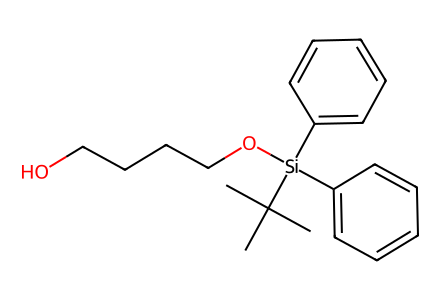
CC(C)(C)[Si](OCCCCO)(c1ccccc1)c1ccccc1Schemes 1-5: both displayed total-synthesis routes to strasseriolide A. SI unavailable; cited preparations of 8 and 17 are boundaries. Retrosynthetic 5,7,42,43 are not isolated compounds. Facts compiled deterministically; independent review pending.
完整 JSON · 逐步 CSV · 路线序列 · SDF · HRMS 核对
| 事件 | 分子连接 | 报告产率 | Canonical reaction SMILES |
|---|---|---|---|
| A01 | 8 → 9 | 9: 81% | CC(C)(C)[Si](OCCCCO)(c1ccccc1)c1ccccc1>>CC(C)(C)[Si](OCCCC(=O)O)(c1ccccc1)c1ccccc1 |
| A02 | 9 + 10 → 11 | 11: 94% | CC(C)(C)[Si](OCCCC(=O)O)(c1ccccc1)c1ccccc1.O=C1N[C@H](Cc2ccccc2)CO1>>CC(C)(C)[Si](OCCCC(=O)N1C(=O)OC[C@H]1Cc1ccccc1)(c1ccccc1)c1ccccc1 |
| A03 | 11 → 12 | 12: 84% | CC(C)(C)[Si](OCCCC(=O)N1C(=O)OC[C@H]1Cc1ccccc1)(c1ccccc1)c1ccccc1>>C[C@H](CCO[Si](c1ccccc1)(c1ccccc1)C(C)(C)C)C(=O)N1C(=O)OC[C@H]1Cc1ccccc1 |
| A04 | 12 → 13 | 13: 93% | C[C@H](CCO[Si](c1ccccc1)(c1ccccc1)C(C)(C)C)C(=O)N1C(=O)OC[C@H]1Cc1ccccc1>>C[C@@H](CO)CCO[Si](c1ccccc1)(c1ccccc1)C(C)(C)C |
| A05 | 13 → 14 | 14: 87% | C[C@@H](CO)CCO[Si](c1ccccc1)(c1ccccc1)C(C)(C)C>>C[C@@H](C=C(Br)Br)CCO[Si](c1ccccc1)(c1ccccc1)C(C)(C)C |
| A06 | 14 → 15 | 15: 99% | C[C@@H](C=C(Br)Br)CCO[Si](c1ccccc1)(c1ccccc1)C(C)(C)C>>CC#C[C@H](C)CCO[Si](c1ccccc1)(c1ccccc1)C(C)(C)C |
| A07 | 15 → 16 | 16: 82% | CC#C[C@H](C)CCO[Si](c1ccccc1)(c1ccccc1)C(C)(C)C>>C/C(I)=C\[C@H](C)CCO[Si](c1ccccc1)(c1ccccc1)C(C)(C)C |
| A08 | 16 + 17 → 18 | 18: 79% | C/C(I)=C\[C@H](C)CCO[Si](c1ccccc1)(c1ccccc1)C(C)(C)C.COC(=O)[C@@H](C)CI>>COC(=O)[C@@H](C)C/C(C)=C/[C@H](C)CCO[Si](c1ccccc1)(c1ccccc1)C(C)(C)C |
| A09 | 18 → 19 | 19: 98% | COC(=O)[C@@H](C)C/C(C)=C/[C@H](C)CCO[Si](c1ccccc1)(c1ccccc1)C(C)(C)C>>COC(=O)[C@@H](C)C/C(C)=C/[C@H](C)CCO |
| A10 | 19 → 20 | 20: 89% | COC(=O)[C@@H](C)C/C(C)=C/[C@H](C)CCO>>COC(=O)[C@@H](C)C/C(C)=C/[C@H](C)CCI |
| A11 | 20 → 6 | 6: 80% | COC(=O)[C@@H](C)C/C(C)=C/[C@H](C)CCI>>C/C(=C\[C@H](C)CCI)C[C@H](C)C(=O)O |
| B01 | 21 → 22 | 22: 81% | CC(C)=CCC[C@H](C)CC=O>>C=CC[C@@H](C)CCC=C(C)C |
| B02 | 22 → 23 | 23: 95% | C=CC[C@@H](C)CCC=C(C)C>>CC(C)=CCC[C@H](C)CCCO |
| B03 | 23 → 24 | 24: 95% | CC(C)=CCC[C@H](C)CCCO>>CC(C)=CCC[C@H](C)CCCOCc1ccccc1 |
| B04 | 24 → 25 | 25: 83% | CC(C)=CCC[C@H](C)CCCOCc1ccccc1>>C[C@@H](CCC=O)CCCOCc1ccccc1 |
| B05 | 25 + 26 → 27 | 27: 85% | CCC(=O)N1C(=O)OC[C@@H]1Cc1ccccc1.C[C@@H](CCC=O)CCCOCc1ccccc1>>C[C@H](CCCOCc1ccccc1)CC[C@H](O)[C@@H](C)C(=O)N1C(=O)OC[C@@H]1Cc1ccccc1 |
| B06 | 27 → 28 | 28: 80% | C[C@H](CCCOCc1ccccc1)CC[C@H](O)[C@@H](C)C(=O)N1C(=O)OC[C@@H]1Cc1ccccc1>>CC[Si](CC)(CC)O[C@@H](CC[C@H](C)CCCOCc1ccccc1)[C@@H](C)CO[Si](c1ccccc1)(c1ccccc1)C(C)(C)C |
| B07 | 28 → 29 | 29: 100% | CC[Si](CC)(CC)O[C@@H](CC[C@H](C)CCCOCc1ccccc1)[C@@H](C)CO[Si](c1ccccc1)(c1ccccc1)C(C)(C)C>>CC[Si](CC)(CC)O[C@@H](CC[C@H](C)CCCO)[C@@H](C)CO[Si](c1ccccc1)(c1ccccc1)C(C)(C)C |
| B08 | 29 → 30 | 30: 80% | CC[Si](CC)(CC)O[C@@H](CC[C@H](C)CCCO)[C@@H](C)CO[Si](c1ccccc1)(c1ccccc1)C(C)(C)C>>CC[Si](CC)(CC)O[C@@H](CC[C@H](C)CCC(=O)O)[C@@H](C)CO[Si](c1ccccc1)(c1ccccc1)C(C)(C)C |
| B09 | 30 + 10 → 31 | 31: 91% | CC[Si](CC)(CC)O[C@@H](CC[C@H](C)CCC(=O)O)[C@@H](C)CO[Si](c1ccccc1)(c1ccccc1)C(C)(C)C.O=C1N[C@H](Cc2ccccc2)CO1>>CC[Si](CC)(CC)O[C@@H](CC[C@H](C)CCC(=O)N1C(=O)OC[C@H]1Cc1ccccc1)[C@@H](C)CO[Si](c1ccccc1)(c1ccccc1)C(C)(C)C |
| B10 | 31 → 32 | 32: 66% | CC[Si](CC)(CC)O[C@@H](CC[C@H](C)CCC(=O)N1C(=O)OC[C@H]1Cc1ccccc1)[C@@H](C)CO[Si](c1ccccc1)(c1ccccc1)C(C)(C)C>>CC[Si](CC)(CC)O[C@@H](CC[C@H](C)C[C@@H](C)C(=O)N1C(=O)OC[C@H]1Cc1ccccc1)[C@@H](C)CO[Si](c1ccccc1)(c1ccccc1)C(C)(C)C |
| B11 | 32 → 33 | 33: 94% | CC[Si](CC)(CC)O[C@@H](CC[C@H](C)C[C@@H](C)C(=O)N1C(=O)OC[C@H]1Cc1ccccc1)[C@@H](C)CO[Si](c1ccccc1)(c1ccccc1)C(C)(C)C>>CC[Si](CC)(CC)O[C@@H](CC[C@H](C)C[C@@H](C)CO)[C@@H](C)CO[Si](c1ccccc1)(c1ccccc1)C(C)(C)C |
| B12 | 33 → 34 | 34: 96% | CC[Si](CC)(CC)O[C@@H](CC[C@H](C)C[C@@H](C)CO)[C@@H](C)CO[Si](c1ccccc1)(c1ccccc1)C(C)(C)C>>CC[Si](CC)(CC)O[C@@H](CC[C@H](C)C[C@@H](C)/C=C(\C)C(=O)OC(C)(C)C)[C@@H](C)CO[Si](c1ccccc1)(c1ccccc1)C(C)(C)C |
| B13 | 34 → 35 | 35: 100% | CC[Si](CC)(CC)O[C@@H](CC[C@H](C)C[C@@H](C)/C=C(\C)C(=O)OC(C)(C)C)[C@@H](C)CO[Si](c1ccccc1)(c1ccccc1)C(C)(C)C>>C/C(=C\[C@H](C)C[C@@H](C)CC[C@H](O)[C@@H](C)CO[Si](c1ccccc1)(c1ccccc1)C(C)(C)C)C(=O)OC(C)(C)C |
| C01 | 6 + 35 → 36 | 36: 89% | C/C(=C\[C@H](C)CCI)C[C@H](C)C(=O)O.C/C(=C\[C@H](C)C[C@@H](C)CC[C@H](O)[C@@H](C)CO[Si](c1ccccc1)(c1ccccc1)C(C)(C)C)C(=O)OC(C)(C)C>>C/C(=C\[C@H](C)CCI)C[C@H](C)C(=O)O[C@@H](CC[C@H](C)C[C@@H](C)/C=C(\C)C(=O)OC(C)(C)C)[C@@H](C)CO[Si](c1ccccc1)(c1ccccc1)C(C)(C)C |
| C01-control | 6 + 35 → 36 | 36: 38% | C/C(=C\[C@H](C)CCI)C[C@H](C)C(=O)O.C/C(=C\[C@H](C)C[C@@H](C)CC[C@H](O)[C@@H](C)CO[Si](c1ccccc1)(c1ccccc1)C(C)(C)C)C(=O)OC(C)(C)C>>C/C(=C\[C@H](C)CCI)C[C@H](C)C(=O)O[C@@H](CC[C@H](C)C[C@@H](C)/C=C(\C)C(=O)OC(C)(C)C)[C@@H](C)CO[Si](c1ccccc1)(c1ccccc1)C(C)(C)C |
| C02 | 36 → 37 | 37: 73% | C/C(=C\[C@H](C)CCI)C[C@H](C)C(=O)O[C@@H](CC[C@H](C)C[C@@H](C)/C=C(\C)C(=O)OC(C)(C)C)[C@@H](C)CO[Si](c1ccccc1)(c1ccccc1)C(C)(C)C>>C/C(=C\[C@H](C)CCI)C[C@H](C)C(=O)O[C@@H](CC[C@H](C)C[C@@H](C)/C=C(\C)C(=O)O)[C@@H](C)CO[Si](c1ccccc1)(c1ccccc1)C(C)(C)C |
| C03 | 37 + 38 → 39 | 39: 79% | C/C(=C\[C@H](C)CCI)C[C@H](C)C(=O)O[C@@H](CC[C@H](C)C[C@@H](C)/C=C(\C)C(=O)O)[C@@H](C)CO[Si](c1ccccc1)(c1ccccc1)C(C)(C)C.Sc1ccccn1>>C/C(=C\[C@H](C)CCI)C[C@H](C)C(=O)O[C@@H](CC[C@H](C)C[C@@H](C)/C=C(\C)C(=O)Sc1ccccn1)[C@@H](C)CO[Si](c1ccccc1)(c1ccccc1)C(C)(C)C |
| C04 | 39 → 40 | 40: 24% | C/C(=C\[C@H](C)CCI)C[C@H](C)C(=O)O[C@@H](CC[C@H](C)C[C@@H](C)/C=C(\C)C(=O)Sc1ccccn1)[C@@H](C)CO[Si](c1ccccc1)(c1ccccc1)C(C)(C)C>>C/C1=C\[C@H](C)CCC(=O)/C(C)=C/[C@H](C)C[C@@H](C)CC[C@@H]([C@@H](C)CO[Si](c2ccccc2)(c2ccccc2)C(C)(C)C)OC(=O)[C@@H](C)C1 |
| C05 | 40 → 41 | 41: 87% | C/C1=C\[C@H](C)CCC(=O)/C(C)=C/[C@H](C)C[C@@H](C)CC[C@@H]([C@@H](C)CO[Si](c2ccccc2)(c2ccccc2)C(C)(C)C)OC(=O)[C@@H](C)C1>>C/C1=C\[C@H](C)CCC(=O)/C(C)=C/[C@H](C)C[C@@H](C)CC[C@@H]([C@@H](C)CO)OC(=O)[C@@H](C)C1 |
| C06 | 41 → 1 | 1: 90% | C/C1=C\[C@H](C)CCC(=O)/C(C)=C/[C@H](C)C[C@@H](C)CC[C@@H]([C@@H](C)CO)OC(=O)[C@@H](C)C1>>C/C1=C\[C@H](C)CCC(=O)/C(C)=C/[C@H](C)C[C@@H](C)CC[C@@H]([C@@H](C)C(=O)O)OC(=O)[C@@H](C)C1 |
| D01 | 34 → 44 | 44: 100% | CC[Si](CC)(CC)O[C@@H](CC[C@H](C)C[C@@H](C)/C=C(\C)C(=O)OC(C)(C)C)[C@@H](C)CO[Si](c1ccccc1)(c1ccccc1)C(C)(C)C>>CC[Si](CC)(CC)O[C@@H](CC[C@H](C)C[C@@H](C)/C=C(\C)C(=O)O)[C@@H](C)CO[Si](c1ccccc1)(c1ccccc1)C(C)(C)C |
| D02 | 44 + 45 → 46 | 46: 76% | CC[Si](CC)(CC)O[C@@H](CC[C@H](C)C[C@@H](C)/C=C(\C)C(=O)O)[C@@H](C)CO[Si](c1ccccc1)(c1ccccc1)C(C)(C)C.c1ccc(SSc2ccccn2)nc1>>CC[Si](CC)(CC)O[C@@H](CC[C@H](C)C[C@@H](C)/C=C(\C)C(=O)Sc1ccccn1)[C@@H](C)CO[Si](c1ccccc1)(c1ccccc1)C(C)(C)C |
| D03 | 20 + 46 → 47 | 47: 57% | CC[Si](CC)(CC)O[C@@H](CC[C@H](C)C[C@@H](C)/C=C(\C)C(=O)Sc1ccccn1)[C@@H](C)CO[Si](c1ccccc1)(c1ccccc1)C(C)(C)C.COC(=O)[C@@H](C)C/C(C)=C/[C@H](C)CCI>>CC[Si](CC)(CC)O[C@@H](CC[C@H](C)C[C@@H](C)/C=C(\C)C(=O)CC[C@@H](C)/C=C(\C)C[C@H](C)C(=O)OC)[C@@H](C)CO[Si](c1ccccc1)(c1ccccc1)C(C)(C)C |
| D04 | 47 → 48 | 48: 95% | CC[Si](CC)(CC)O[C@@H](CC[C@H](C)C[C@@H](C)/C=C(\C)C(=O)CC[C@@H](C)/C=C(\C)C[C@H](C)C(=O)OC)[C@@H](C)CO[Si](c1ccccc1)(c1ccccc1)C(C)(C)C>>COC(=O)[C@@H](C)C/C(C)=C/[C@H](C)CCC(=O)/C(C)=C/[C@H](C)C[C@@H](C)CC[C@H](O)[C@@H](C)CO[Si](c1ccccc1)(c1ccccc1)C(C)(C)C |
| D05 | 48 → 49 | 49: 99% | COC(=O)[C@@H](C)C/C(C)=C/[C@H](C)CCC(=O)/C(C)=C/[C@H](C)C[C@@H](C)CC[C@H](O)[C@@H](C)CO[Si](c1ccccc1)(c1ccccc1)C(C)(C)C>>C/C(=C\[C@H](C)CCC(=O)/C(C)=C/[C@H](C)C[C@@H](C)CC[C@H](O)[C@@H](C)CO[Si](c1ccccc1)(c1ccccc1)C(C)(C)C)C[C@H](C)C(=O)O |
| D06 | 49 → 40 | 40: 76% | C/C(=C\[C@H](C)CCC(=O)/C(C)=C/[C@H](C)C[C@@H](C)CC[C@H](O)[C@@H](C)CO[Si](c1ccccc1)(c1ccccc1)C(C)(C)C)C[C@H](C)C(=O)O>>C/C1=C\[C@H](C)CCC(=O)/C(C)=C/[C@H](C)C[C@@H](C)CC[C@@H]([C@@H](C)CO[Si](c2ccccc2)(c2ccccc2)C(C)(C)C)OC(=O)[C@@H](C)C1 |

CC(C)(C)[Si](OCCCCO)(c1ccccc1)c1ccccc1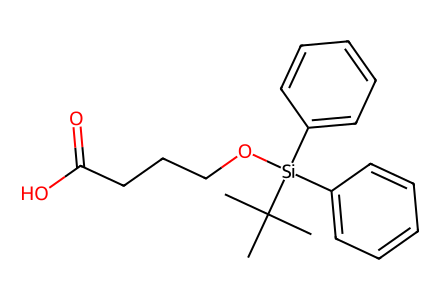
CC(C)(C)[Si](OCCCC(=O)O)(c1ccccc1)c1ccccc1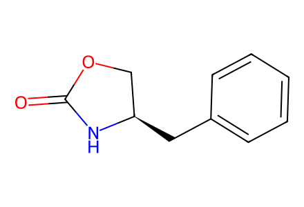
O=C1N[C@H](Cc2ccccc2)CO1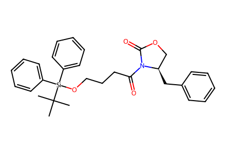
CC(C)(C)[Si](OCCCC(=O)N1C(=O)OC[C@H]1Cc1ccccc1)(c1ccccc1)c1ccccc1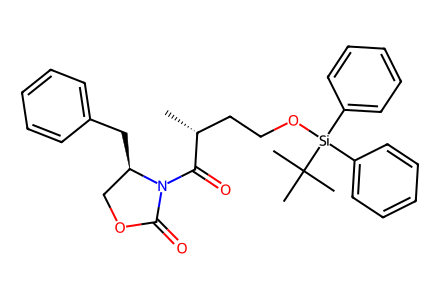
C[C@H](CCO[Si](c1ccccc1)(c1ccccc1)C(C)(C)C)C(=O)N1C(=O)OC[C@H]1Cc1ccccc1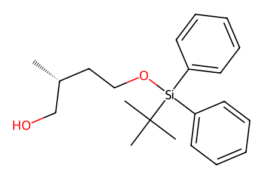
C[C@@H](CO)CCO[Si](c1ccccc1)(c1ccccc1)C(C)(C)C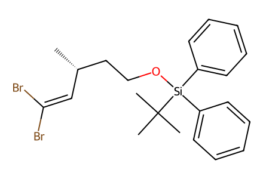
C[C@@H](C=C(Br)Br)CCO[Si](c1ccccc1)(c1ccccc1)C(C)(C)C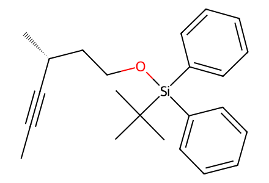
CC#C[C@H](C)CCO[Si](c1ccccc1)(c1ccccc1)C(C)(C)C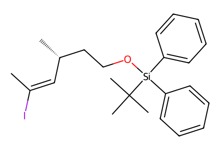
C/C(I)=C\[C@H](C)CCO[Si](c1ccccc1)(c1ccccc1)C(C)(C)C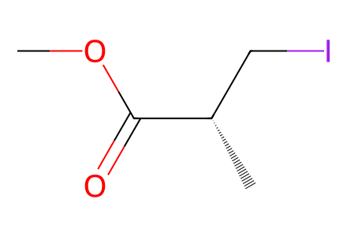
COC(=O)[C@@H](C)CI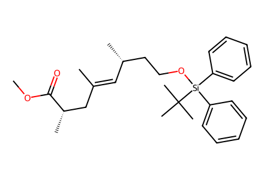
COC(=O)[C@@H](C)C/C(C)=C/[C@H](C)CCO[Si](c1ccccc1)(c1ccccc1)C(C)(C)C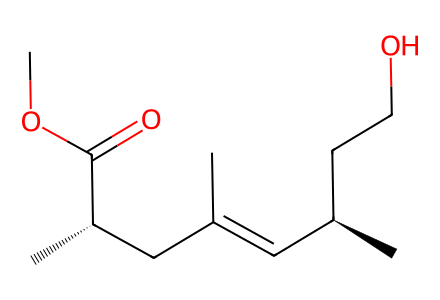
COC(=O)[C@@H](C)C/C(C)=C/[C@H](C)CCO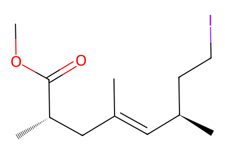
COC(=O)[C@@H](C)C/C(C)=C/[C@H](C)CCI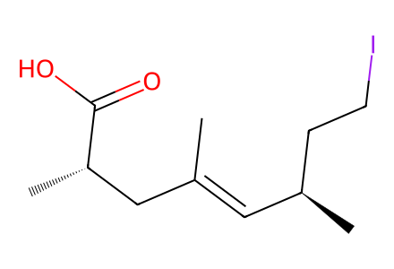
C/C(=C\[C@H](C)CCI)C[C@H](C)C(=O)O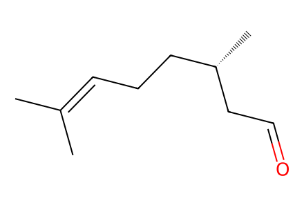
CC(C)=CCC[C@H](C)CC=O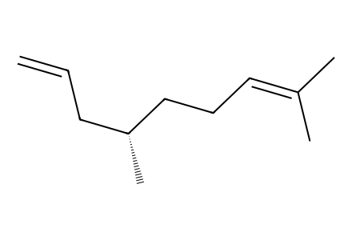
C=CC[C@@H](C)CCC=C(C)C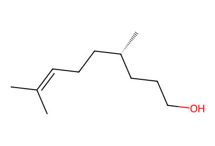
CC(C)=CCC[C@H](C)CCCO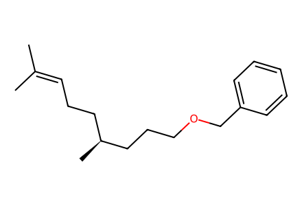
CC(C)=CCC[C@H](C)CCCOCc1ccccc1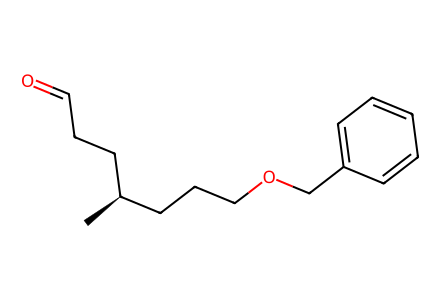
C[C@@H](CCC=O)CCCOCc1ccccc1
CCC(=O)N1C(=O)OC[C@@H]1Cc1ccccc1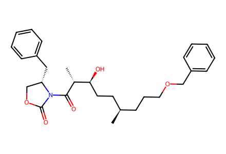
C[C@H](CCCOCc1ccccc1)CC[C@H](O)[C@@H](C)C(=O)N1C(=O)OC[C@@H]1Cc1ccccc1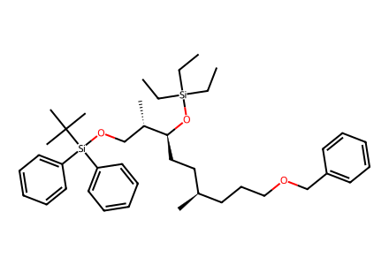
CC[Si](CC)(CC)O[C@@H](CC[C@H](C)CCCOCc1ccccc1)[C@@H](C)CO[Si](c1ccccc1)(c1ccccc1)C(C)(C)C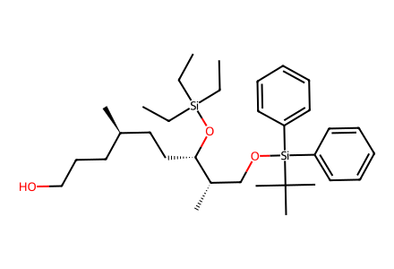
CC[Si](CC)(CC)O[C@@H](CC[C@H](C)CCCO)[C@@H](C)CO[Si](c1ccccc1)(c1ccccc1)C(C)(C)C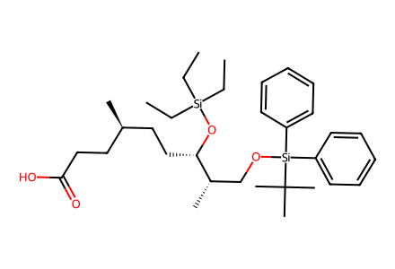
CC[Si](CC)(CC)O[C@@H](CC[C@H](C)CCC(=O)O)[C@@H](C)CO[Si](c1ccccc1)(c1ccccc1)C(C)(C)C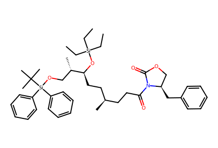
CC[Si](CC)(CC)O[C@@H](CC[C@H](C)CCC(=O)N1C(=O)OC[C@H]1Cc1ccccc1)[C@@H](C)CO[Si](c1ccccc1)(c1ccccc1)C(C)(C)C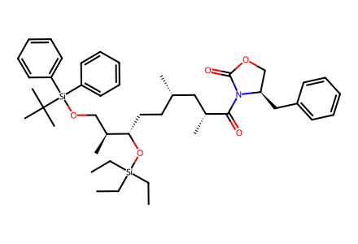
CC[Si](CC)(CC)O[C@@H](CC[C@H](C)C[C@@H](C)C(=O)N1C(=O)OC[C@H]1Cc1ccccc1)[C@@H](C)CO[Si](c1ccccc1)(c1ccccc1)C(C)(C)C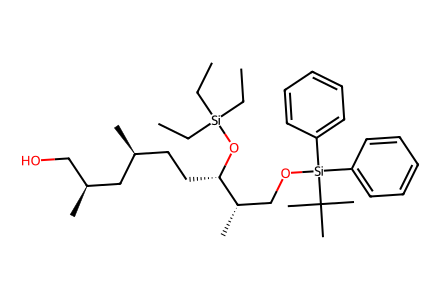
CC[Si](CC)(CC)O[C@@H](CC[C@H](C)C[C@@H](C)CO)[C@@H](C)CO[Si](c1ccccc1)(c1ccccc1)C(C)(C)C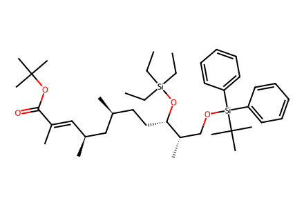
CC[Si](CC)(CC)O[C@@H](CC[C@H](C)C[C@@H](C)/C=C(\C)C(=O)OC(C)(C)C)[C@@H](C)CO[Si](c1ccccc1)(c1ccccc1)C(C)(C)C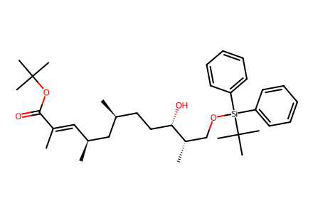
C/C(=C\[C@H](C)C[C@@H](C)CC[C@H](O)[C@@H](C)CO[Si](c1ccccc1)(c1ccccc1)C(C)(C)C)C(=O)OC(C)(C)C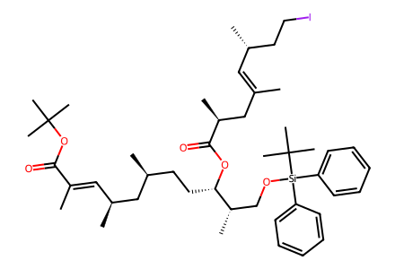
C/C(=C\[C@H](C)CCI)C[C@H](C)C(=O)O[C@@H](CC[C@H](C)C[C@@H](C)/C=C(\C)C(=O)OC(C)(C)C)[C@@H](C)CO[Si](c1ccccc1)(c1ccccc1)C(C)(C)C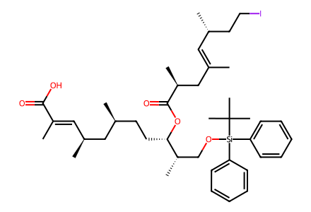
C/C(=C\[C@H](C)CCI)C[C@H](C)C(=O)O[C@@H](CC[C@H](C)C[C@@H](C)/C=C(\C)C(=O)O)[C@@H](C)CO[Si](c1ccccc1)(c1ccccc1)C(C)(C)C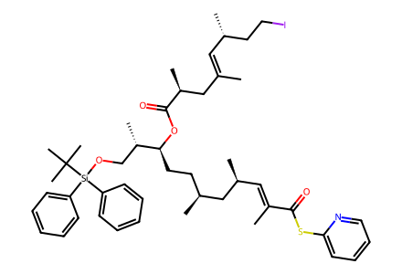
C/C(=C\[C@H](C)CCI)C[C@H](C)C(=O)O[C@@H](CC[C@H](C)C[C@@H](C)/C=C(\C)C(=O)Sc1ccccn1)[C@@H](C)CO[Si](c1ccccc1)(c1ccccc1)C(C)(C)C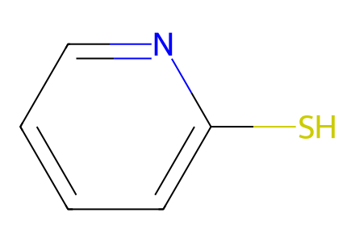
Sc1ccccn1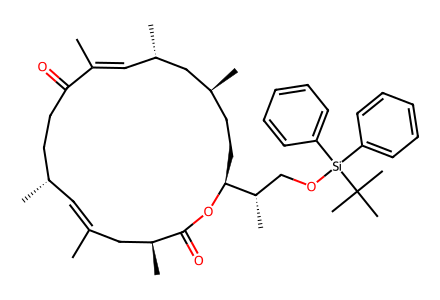
C/C1=C\[C@H](C)CCC(=O)/C(C)=C/[C@H](C)C[C@@H](C)CC[C@@H]([C@@H](C)CO[Si](c2ccccc2)(c2ccccc2)C(C)(C)C)OC(=O)[C@@H](C)C1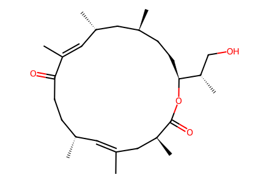
C/C1=C\[C@H](C)CCC(=O)/C(C)=C/[C@H](C)C[C@@H](C)CC[C@@H]([C@@H](C)CO)OC(=O)[C@@H](C)C1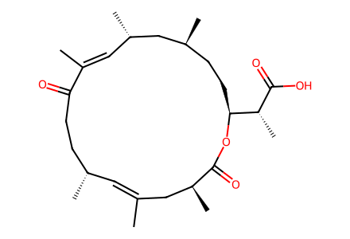
C/C1=C\[C@H](C)CCC(=O)/C(C)=C/[C@H](C)C[C@@H](C)CC[C@@H]([C@@H](C)C(=O)O)OC(=O)[C@@H](C)C1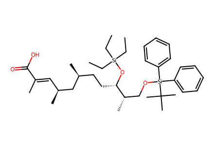
CC[Si](CC)(CC)O[C@@H](CC[C@H](C)C[C@@H](C)/C=C(\C)C(=O)O)[C@@H](C)CO[Si](c1ccccc1)(c1ccccc1)C(C)(C)C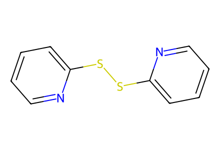
c1ccc(SSc2ccccn2)nc1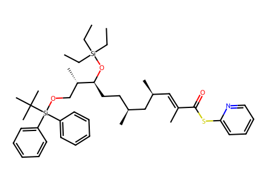
CC[Si](CC)(CC)O[C@@H](CC[C@H](C)C[C@@H](C)/C=C(\C)C(=O)Sc1ccccn1)[C@@H](C)CO[Si](c1ccccc1)(c1ccccc1)C(C)(C)C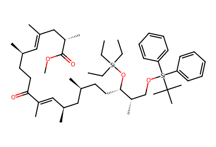
CC[Si](CC)(CC)O[C@@H](CC[C@H](C)C[C@@H](C)/C=C(\C)C(=O)CC[C@@H](C)/C=C(\C)C[C@H](C)C(=O)OC)[C@@H](C)CO[Si](c1ccccc1)(c1ccccc1)C(C)(C)C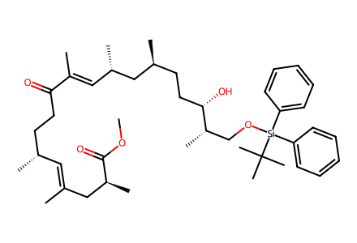
COC(=O)[C@@H](C)C/C(C)=C/[C@H](C)CCC(=O)/C(C)=C/[C@H](C)C[C@@H](C)CC[C@H](O)[C@@H](C)CO[Si](c1ccccc1)(c1ccccc1)C(C)(C)C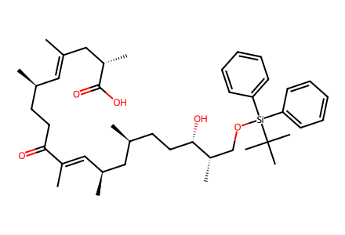
C/C(=C\[C@H](C)CCC(=O)/C(C)=C/[C@H](C)C[C@@H](C)CC[C@H](O)[C@@H](C)CO[Si](c1ccccc1)(c1ccccc1)C(C)(C)C)C[C@H](C)C(=O)O